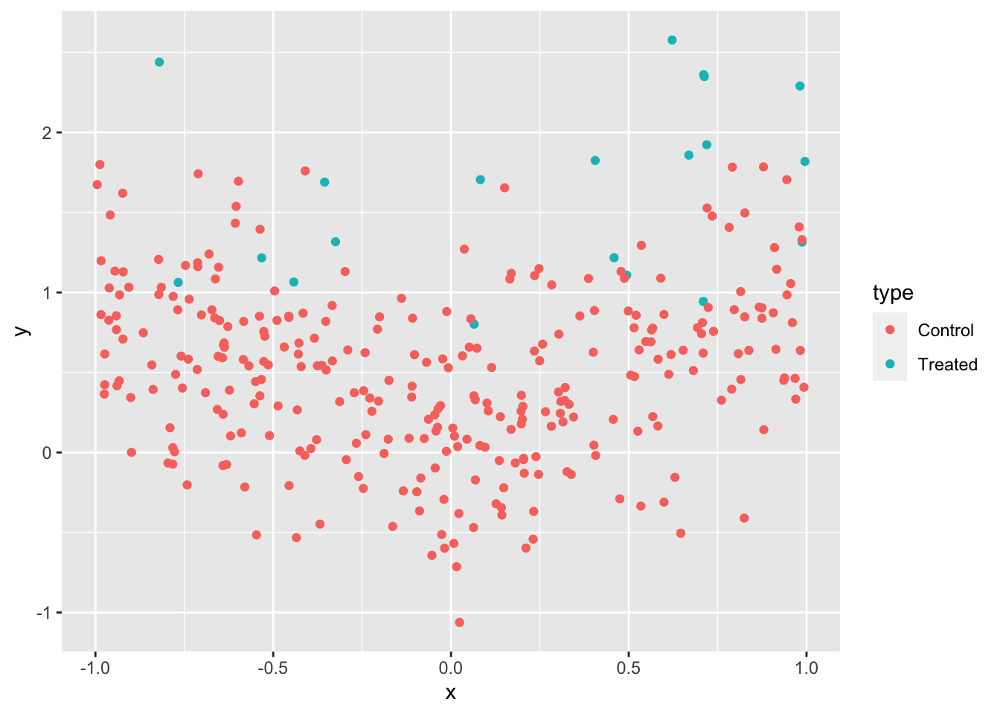
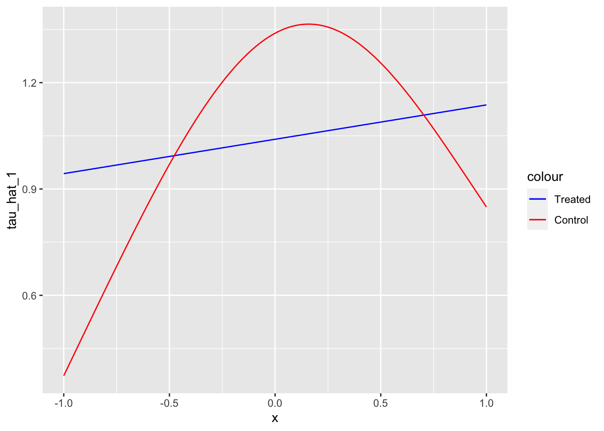
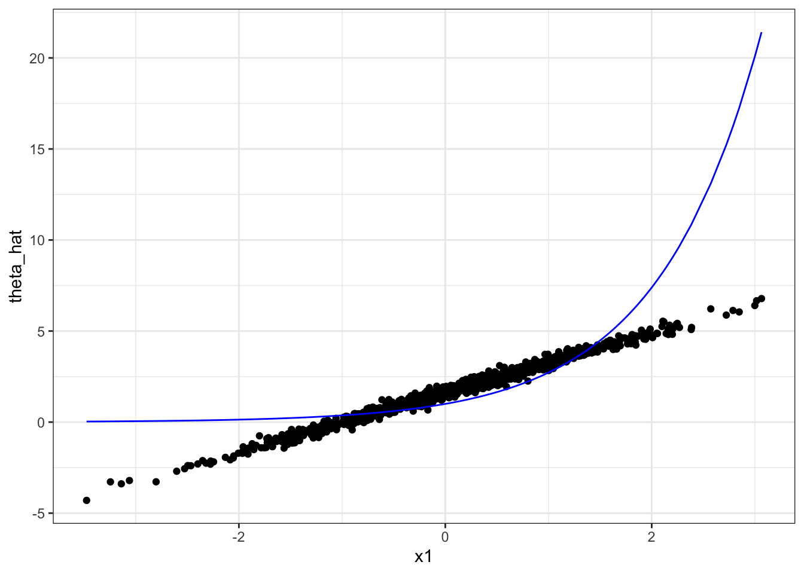

11 S-, X-, T-, and R-learner
In this section, we look at the S-, X-, T-, and R-learner, which are method that estimate heterogeneous treatment effects when the treatment is binary. While X-leaner and T-learner cannot be extended to continuous treatment cases, S-learner and R-learner can be. Mathematical notations used in this chapter closely follow those of (Künzel et al. 2019) and (Nie and Wager 2021).
11.1 Motivation
In Chapter 10, the basic idea of double machine learning (DML) methods was introduced when the treatment effect is homogeneous. We now turn our focus to the task of estimating heterogeneous treatment effects: the impact of a treatment varies based on observed attributes of the subjects. Heterogeneous treatment effect is also referred to as conditional average treatment effect (CATE).
Conditional on observed attributes.
Understanding how treatment effects vary can be highly valuable in many circumstances.
Example 1: If we come to know a particular drug is effective on elderly people but detrimental to kids, then doctors can make a smart decision of prescribing the drug to elderly people, but not to kids.
In this example, the heterogeneity driver is age.
Example 2: If we come to know that fertilizer is more effective in increasing corn yield in soil type A than B, then farmers can apply more fertilizer on the parts of the field where soil type is A but less on where soil type is B.
In this example, the heterogeneity driver is soil type.
As you can see in these examples, knowledge on the heterogeneity of the treatment effect and its drivers can help decision makers smart-target treatments and policies.
11.2 Modeling Framework
Consider the potential outcomes:
- \(Y(0)\): potential outcomes under control (\(W = 0\))
- \(Y(1)\): potential outcomes under treatment (\(W = 1\))
We get to observe only one of them. Further, let \(\mu_1(X)\) and \(\mu_0(X)\) denote the expected value of the potential conditional outcomes:
\[ \begin{align} \mu_1(X) = E[Y(1)|X]\\ \mu_0(X) = E[Y(0)|X] \end{align} \]
The statistics of interest is the treatment effect conditional on features (\(X\)):
\[ \begin{align} \tau(X) = E[Y(1)|X] - E[Y(0)|X] \end{align} \]
It is assumed that conditional unconfoundedness is satisfied.
\[ \begin{align} {Y_0, Y_1} \perp W|X \end{align} \]
No assumption about the quantitative relationship between \(Y\), \(W\), and \(X\) is assumed throughout this chapter.
11.3 S-, T-, and X-Learner
11.3.1 S-leaner
S-leaner estimates CATE by taking the following steps:
- Regress \(Y\) on \(W\) and \(X\) to estimate \(E[Y|W,X]\) using any appropriate ML regression methods and call it \(\hat{\mu}(W,X)\).
- Estimate \(\hat{\tau}(X)\) as \(\hat{\mu}(W=1,X)-\hat{\mu}(W=0,X)\)
In this approach, no special treatment is given to \(W\). It is just a covariate along with others (\(X\)). This approach is names S-leaner by Künzel et al. (2019) because it involves estimating a single response function.
11.3.2 T-learner
- Regress \(Y\) on \(W\) and \(X\) using the treated observations to estimate \(\mu_1(X)\) using any appropriate ML regression methods.
- Regress \(Y\) on \(W\) and \(X\) using the control observations to estimate \(\mu_0(X)\) using any appropriate ML regression methods.
- Estimate \(\hat{\tau}(X)\) as \(\hat{\mu}_1(X)-\hat{\mu}(X)\)
This approach is named T-leaner by Künzel et al. (2019) because it involves estimating two functions.
11.3.3 X-learner
- Estimate \(\mu_1(X)\) and \(\mu_0(X)\) using any appropriate ML regression methods. (Steps 1 and 2 of the T-learner)
- Impute individual treatment effect for the treated and control groups as follows
\[ \begin{align} \tilde{D}_i^1(X_i) = Y^1_i - \hat{\mu}_0(X_i)\\ \tilde{D}_i^0(X_i) = \hat{\mu}_1(X_i) - Y^0_i \end{align} \]
This is similar to cross-fitting we saw in Chapter 10, where the folds are the treated and control groups.
Regress \(\tilde{D}_i^1(X_i)\) on \(X\) using the observations in the treated group and denote the predicted value as \(\tau_1(X)\)
Regress \(\tilde{D}_i^0(X_i)\) on \(X\) using the observations in the control group and denote the predicted value as \(\tau_0(X)\)
- Calculate \(\tau(X)\) as their weighted average
\[ \begin{align} \tau(X) = g(X)\cdot\tau_0(X) + [1-g(X)]\cdot\tau_1(X) \end{align} \tag{11.1}\]
Any value of \(g(X)\) is acceptable. One option of \(g(X)\) may be the estimated propensity score \(E[W|X]\).
11.4 T-learner v.s. X-learner
Here, an advantage of X-learner over T-learner is demonstrated (This example also serves as an illustration of how these learners are implemented). Specifically, X-learner can be particularly useful when the control-treatment assignments in the sample are unbalanced. For example, it is often the case that there are plenty of observations in the control group, while there are not many treated observations. For the purpose of illustration, consider a rather extreme case where there are only 10 observations in the treated group, while there are 300 observations in the control group. We use the following toy data generating process:
Packages to load for replication
\[ \begin{align} y = \tau W + |x| + v \end{align} \]
where \(\tau = 1\). So, the treatment effect is not heterogeneous. For the purpose of illustrating the advantage of X-learner over T-learner, it is convenient if the underlying model is simpler.
ggplot(data = data) +
geom_point(aes(y = y, x = x, color = type))
Let’s first estimate \(\mu_1(X)\) and \(\mu_0(X)\) (Step 1). Since we have only \(20\) observations in the treated group, we will use a linear regression to avoid over-fitting (following the example in Künzel et al. (2019)).
Now that \(\mu_1(X)\) and \(\mu_0(X)\) are estimated, we can estimate \(\hat{\tau}(X)\) by T-learner.
As you can see, T-leaner is heavily biased. This is because of the unreliable estimation of \(\mu_1(X)\) due to lack of observations in the treated group.
Now, let’s move on to X-learner. We impute individual treatment effects (Step 2).
#=== mu (treated) ===#
mu_hat_1 <- predict(mu_0_trained, newdata = data[type == "Treated", ])
#=== mu (control) ===#
mu_hat_0 <- predict(mu_1_trained, newdata = data[type == "Control", ])
#=== assign the values ===#
data[type == "Treated", mu_hat := mu_hat_1]
data[type == "Control", mu_hat := mu_hat_0]
#=== find individual TE ===#
data[, D := ifelse(type == "Treated", y - mu_hat, mu_hat - y)]We can now regress \(D\) on \(X\) (Step 3),
#--------------------------
# tau (treated)
#--------------------------
tau_1_trained <- lm(D ~ x, data = data[type == "Treated", ])
#=== estimate tau_1 ===#
tau_hat_data[, tau_hat_1 := predict(tau_1_trained, newdata = tau_hat_data)]
#--------------------------
# tau (control)
#--------------------------
tau_0_trained <- gam(D ~ s(x, k = 4), data = data[type == "Control", ])
#=== estimate tau_1 ===#
tau_hat_data[, tau_hat_0 := predict(tau_0_trained, newdata = tau_hat_data)]ggplot(data = tau_hat_data) +
geom_line(aes(y = tau_hat_1, x = x, color = "Treated")) +
geom_line(aes(y = tau_hat_0, x = x, color = "Control")) +
scale_color_manual(values = c("Treated" = "blue", "Control" = "red"))
Let’s use propensity score as \(g(X)\) in Step 4.
Let’s predict \(E[W|X]\) at each value of \(X\) at which we are estiamting \(\tau\).
tau_hat_data[, g_x := predict(w_gam_trained, newdata = tau_hat_data, type = "response")]As you can see below, the mean value of \(g(x)\) is small because the treatment probability is very low (it is only \(20\) out of \(320\)).
mean(tau_hat_data[, g_x])[1] 0.06451538This number is basically \(20/320\). So, in this example, we could have just used the proportion of the treated observations. Notice that \(g(X)\) is multiplied to \(\hat{\tau}_0(X)\) in Equation 11.1. So, we are giving a lower weight to \(\hat{\tau}_0(X)\). This is because \(\hat{\tau}_0(X)\) is less reliable because \(\hat{\mu}_1(X)\) is less reliable due to the lack of samples in the treated group.
tau_hat_data[, tau_hat_X := g_x * tau_hat_0 + (1-g_x) * tau_hat_1]As you can see, X-learner outperforms T-learner in this particualr instance at least in terms of point estimates of \(\tau(X)\).
ggplot(data = tau_hat_data) +
geom_line(aes(y = tau_hat_T, x = x, color = "T-learner")) +
geom_line(aes(y = tau_hat_X, x = x, color = "X-learner")) +
geom_hline(yintercept = 1, aes(color = "True Treatment Effect")) +
scale_color_manual(
values = c(
"T-learner" = "red",
"X-learner" = "blue",
"True Treatment Effect" = "black"
),
name = ""
) +
ylab("Treatment Effect") +
theme_bw() +
theme(legend.position = "bottom")
11.5 R-learner
Let \(e(X)\) denote the propensity score \(pr(W=1|X) = E[W|X]\).
Under the unconfoundedness assumption,
\(E[\varepsilon(W_i)|X_i, W_i] = 0\), where \(\varepsilon_i(w) = Y_i(w) - {\mu_0(X_i)} + w\tau(X_i)\)
- \(Y_i(0) = {\mu_0(X_i)} + 0\cdot \tau(X_i) = \mu_0(X_i) + \varepsilon_i\)
- \(Y_i(1) = {\mu_0(X_i)} + 1\cdot \tau(X_i) = \mu_0(X_i) + \tau(X_i) + \varepsilon_i\)
Conditional mean outcome (averaged across both treated and untreated) denoted by \(m(x)\) is
\[ \begin{align} m(x) = E[Y|X=x] = \mu_0(x) + e(x)\cdot \tau(x) \end{align} \]
Note that that observed outcome can be written as follows:
\[ \begin{align} Y_i = \mu_0(X_i) + W_i \tau(X_i) + \varepsilon_i \end{align} \]
Subtracting \(m(X_i)\) from both sides,
\(Y_i - m(X_i) = [W_i - e(X_i)]\cdot \tau(X_i) + \varepsilon_i\)
This is termed Robinson transformation, which is originally proposed by Robinson (1988).
According to Robins (2004),
\(\tau(X_i) = argmin_{\tau}\large\{\normalsize E\large(\normalsize[\{Y_i-m(X_i)\}-{W_i - e(X_i)}\tau]^2\large)\large\}\)
So, if we were to know \(m(X_i)\) and \(e(X_i)\) for some reason, we can estimate \(\tau(X_i)\) by solving the following sample analog of the loss minimization problem:
\(\tilde{\tau}(X_i)= argmin_{\tau}\large\{\normalsize \frac{1}{n}\sum_{i=1}^{n}\normalsize[\{Y_i-m(X_i)\}-\{W_i - e(X_i)\}\tau]^2+\Lambda_n(\tau)\large\}\)
where \(\Lambda_n(\tau)}\) is interpreted as a regularizer on the complexity of the \(\tau\) function.
Of course the problem is that we do not know \(m(X_i)\) and \(e^*(X_i)\), so the above solution is not feasible.
11.6 R-learner
The model of interest in general form is as follows:
\[ \begin{aligned} Y & = \theta(X)\cdot T + g(X, W) + \varepsilon \\ T & = f(X, W) + \eta \end{aligned} \tag{11.2}\]
- \(Y\): dependent variable
- \(T\): treatment variable (can be either binary dummy or continuous)
- \(X\): collection of variables that affect Y indirectly through the treatment (\(\theta(X)\cdot T\)) and directly (\(g(X, W)\)) independent of the treatment
- \(W\): collection of variables that affect directly (\(g(X, W)\)) independent of the treatment, but not through the treatment
Here are the key assumptions:
- \(E[\varepsilon|X, W] = 0\)
- \(E[\eta|X, W] = 0\)
- \(E[\eta\cdot\varepsilon|X, W] = 0\)
Our objective is to estimate the constant marginal CATE \(\theta(X)\). (constant in the sense marginal CATE is the same irrespective of the value of the treatment)
11.7 R-learner
11.7.1 Theoretical background
Under the assumptions,
\[ \begin{aligned} E[Y|X, W] = \theta(X)\cdot E[T|X,W] + g(X,W) \end{aligned} \]
Thus,
\[ \begin{aligned} Y & = \theta(X)\cdot T + g(X,W) + \varepsilon \\ \Rightarrow Y - E[Y|X, W] & = \theta(X)\cdot T + g(X,W) + \varepsilon - \theta(X)\cdot E[T|X,W] - g(X,W) \\ \Rightarrow Y - E[Y|X, W] & = \theta(X)\cdot (T - E[T|X,W]) + \varepsilon \\ \end{aligned} \]
\[ \begin{aligned} Y - E[Y|X, W] & = \theta(X)\cdot (T - E[T|X,W]) + \varepsilon \end{aligned} \]
Suppose we know \(E[Y|X, W]\) and \(E[T|X,W]\), then we can construct the following new variables:
- \(\tilde{Y} = Y - E[Y|X, W]\)
- \(\tilde{T} = T - E[T|X, W] = \eta\)
Then, the problem of identifying \(\theta(X)\) reduces to estimating the following model:
\[ \begin{aligned} \tilde{Y} = \theta(X)\cdot \tilde{T} + \varepsilon \end{aligned} \]
Since \(E[\eta\cdot\varepsilon|X] = 0\) by assumption, we can regress \(\tilde{Y}\) on \(X\) and \(\tilde{T}\),
\[ \begin{aligned} \hat{\theta} = argmin_{\theta} \;\; E[(\tilde{Y} - \theta(X)\cdot \tilde{T})^2] \end{aligned} \tag{11.3}\]
11.7.2 Estimation steps
In practice, we of course do not observe \(E[Y|X, W]\) and \(E[T|X, W]\). So, we first need to estimate them using the data at hand to construct \(\hat{\tilde{Y}}\) and \(\hat{\tilde{T}}\). You can use any suitable statistical methods to estimate \(E[Y|X, W]\) and \(E[T|X, W]\). Some machine learning methods allow you to estimate them without assuming any functional form or structural assumptions. If you believe they are linear functions of \(X\) and \(W\), may could alternatively use lasso or other linear models. It is important to keep in mind that the estimation of \(E[Y|X, W]\) and \(E[T|X, W]\) is done by cross-fitting (see Section 10.1.4) to avoid over-fitting bias. Let, \(f(X, W)\) and \(g(X,W)\) denote \(\tilde{Y}\) and \(\tilde{T}\), respectively. Further, let \(I_{-i}\) denote all the observations that belong to the folds that \(i\) does not belong to. Finally, let \(\hat{f}(X_i, W_i)^{I_{-i}}\) and \(\hat{g}(X_i, W_i)^{I_{-i}}\) denote \(\tilde{Y}\) and \(\tilde{T}\) estimated using \(I_{-i}\).
Just like the DML approach discussed in Chapter 10, both \(Y\) and \(T\) are orthogonalized.
Then the quality of fit (explaining the heterogeneity in the impact of treatment) can be expressed as follows, which is the empirical version of Equation 11.3:
\[ \begin{aligned} \sum_{i=1}^N [Y_i - \hat{f}(X_i,W_i)^{I_{-i}} - \theta(X)\cdot (T_i - \hat{g}(X_i,W_i)^{I_{-i}})]^2 \end{aligned} \]
This is called R-score, and it can be used for causal model selection, which is covered later.
The final stage of the R-learner is to estimate \(\theta(X)\) by minimizing the R-score plus the regularization term (if desirable).
\[ \begin{aligned} \hat{\theta}(X) = argmin_{\theta(X)}\;\;\sum_{i=1}^N [Y_i - \hat{f}(X_i,W_i)^{I_{-i}} - \theta(X)\cdot (T_i - \hat{g}(X_i,W_i)^{I_{-i}})]^2 + \Lambda(\theta(X)) \end{aligned} \]
where \(\Lambda(\theta(X))\) is the penalty on the complexity of \(\theta(X)\). For example, if you choose to use lasso, then \(\Lambda(\theta(X))\) is the L1 norm. You have lots of freedom as to what model you use in the final stage. The econml package offers several off-the-shelf choices of R-learner (DML) approaches that differ in the model used at the final stage, including causal forest, lasso, etc.
11.8 R-leaner Example: Linear DML
We saw a general R-learner framework for CATE estimation. We now look at an example of Linear DML, which uses a linear model at the final stage. So, we are assuming that \(\theta(X)\) can be written as follows in Equation 11.2:
\[ \begin{aligned} \theta(X) = \alpha + \beta_1 x_1 + \beta_2 x_2 + \dots + \beta_k x_k \end{aligned} \]
where \(x_1\) through \(x_k\) are the drivers of heterogeneity in treatment effects and \(\beta_1\) through \(\beta_k\) are their coefficients.
We use both Python and R for this demonstration. So, let’s set things up for that.
library(reticulate)
use_virtualenv("ml-learning")For this demonstration, we use synthetic data according to the following data generating process:
\[ \begin{aligned} y_i = exp(x_{i,1}) d_i + x_{i,1} + \frac{1}{4}\cdot\frac{exp(x_{i,3})}{1 + exp(x_{i,3})} + \mu_i \\ d_i = \frac{exp(x_{i,1})}{1 + exp(x_{i,1})} + \frac{1}{4}\cdot x_{i,3}+ \eta_i \end{aligned} \]
Note that this is the same data generating process used in Chapter 10 except that the impact of the treatment (\(d\)) now depends on \(x_1\). We can use gen_data() function that is defined in Section 10.1.2.
We now split the data into training and test datasets.
from sklearn.model_selection import train_test_split
X_train, X_test, y_train, y_test, d_train, d_test= train_test_split(r.X, r.y, r.d, test_size = 0.5, random_state = 8923)Here, to train a linear DML model, we use the Python econml package, which offers one of the most comprehensive sets of off-the-shelf R-leaner (DML) methods (Keith Battocchi 2019). We can use the DML class to implement linear DML.
from econml.dml import DMLDML is a child class of _Rlearner, which is a private class. The DML class has several child classes: LinearDML, SpatseLinearDML, NonParamDML, and CausalForestDML.
As we saw above in Section 11.7.2, we need to specify three models:
-
model_y: model for estimating \(E[Y|X,W]\) -
model_t: model for estimating \(E[T|X,W]\) -
model_final: model for estimating \(\theta(X)\)
In this example, let’s use gradient boosting regression for both model_y and model_t and use lasso with cross-validation for model_final. Let’s import GradientBoostingRegressor() and LassoCV() from the scikitlearn package.
from sklearn.ensemble import GradientBoostingRegressor
from sklearn.linear_model import LassoCVWe can now set up our DML framework like below:
est = DML(
model_y = GradientBoostingRegressor(),
model_t = GradientBoostingRegressor(),
model_final = LassoCV(fit_intercept = False)
)Note that no training has happened yet at this point. We simply created a recipe. Once we provide ingredients (data), we can cook (train) with the fit() method.
est.fit(y_train, d_train, X = X_train, W = X_train)- first argument: dependent variable
- second argument: treatment variable
-
X: variables that drive treatment effect heterogeneity -
W: variables that affect the dependent variable directly
Here, we set X = W.
Once, the training is done. We can use the effect() method to predict \(\theta(X)\).
te_test = est.effect(X_test)Figure 11.1 presents the estimated and true marginal treatment effect (\(\theta(X)\)) as a function of x1.
plot_data <-
data.table(
x1 = py$X_test[, 1],
te = py$te_test
)
ggplot(plot_data) +
geom_point(aes(y = te, x = x1)) +
geom_line(aes(y = exp(x1), x = x1), color = "blue") +
theme_bw()
Since we forced \(\theta(X)\) to be linear in x1, it is not surprising that the estimated MTE looks linear in x1 even though the true MTE is an exponential function of x1. In the next chapter (?sec-forest-cate), we discuss CATE estimators based on forest, which estimates \(\theta(X)\) non-parametrically, relaxing the assumption of \(\theta(X)\) being linear-in-parameter.
There are many more variations in DML than the one presented here. For those who are interested, I recommend going through examples presented here for DML